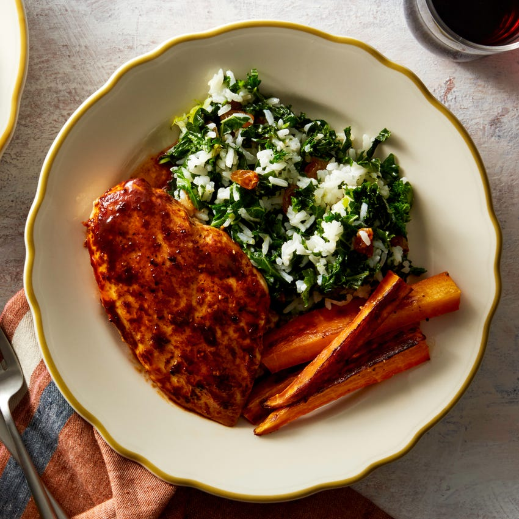
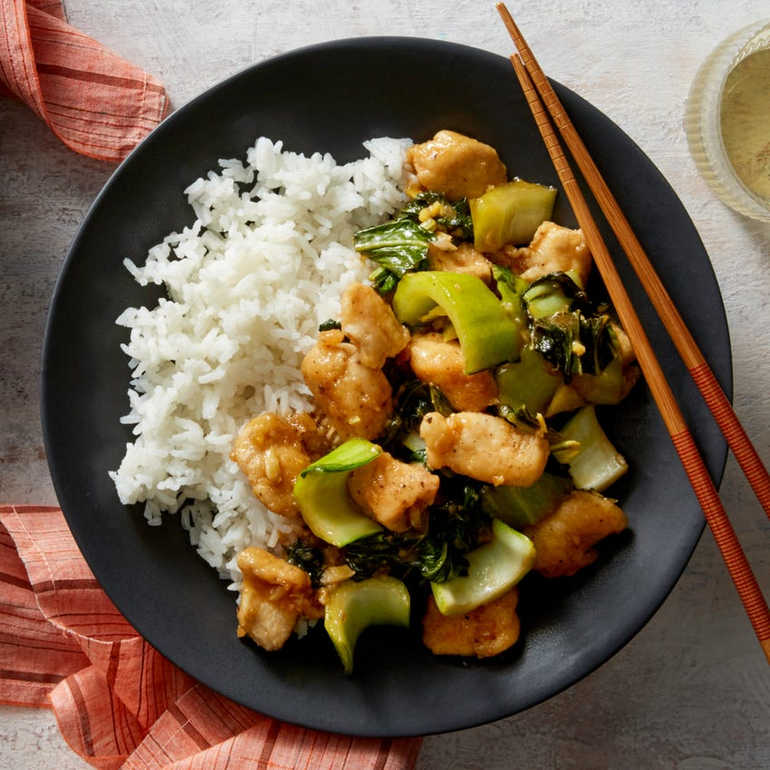

All Recipes

Ancho-Orange Chicken
Ancho-Orange Chicken
with Kale Rice & Roasted Carrots

Beef Medallions & Mushroom Sauce
with Mashed Potatoes

Broccoli & Basil Pesto Sandwiches
with Romaine & Citrus Salad
Broccoli & Mozzarella Calzones
with Caesar Salad

Bucatini Alfredo
with Broccoli

Bucatini & Tomato Sauce
with Roasted Broccoli

Cheesy Enchiladas Rojas
with Mushrooms & Kale

Crispy Fish Sandwiches
with Tartar Sauce & Roasted Sweet Potato Wedges

General Tso's Chicken